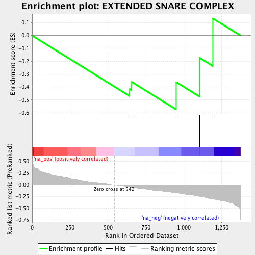

| | | Dataset | ranked_by_GAP.rnk |
| Phenotype | NoPhenotypeAvailable |
| Upregulated in class | na_neg |
| GeneSet | EXTENDED SNARE COMPLEX |
| Enrichment Score (ES) | -0.5737442 |
| Normalized Enrichment Score (NES) | -1.139034 |
| Nominal p-value | 0.30794165 |
| FDR q-value | 0.57408434 |
| FWER p-Value | 1.0 |
Table: GSEA Results Summary

Fig 1: Enrichment plot: EXTENDED SNARE COMPLEX
Profile of the Running ES Score & Positions of GeneSet Members on the Rank Ordered List
| PROBE | GENE SYMBOL | GENE_TITLE | RANK IN GENE LIST | RANK METRIC SCORE | RUNNING ES | CORE ENRICHMENT | | 1 | VAM3 | | | 643 | -0.043 | -0.4152 | Yes |
| 2 | GOS1 | | | 656 | -0.051 | -0.3599 | Yes |
| 3 | SNC2 | | | 950 | -0.170 | -0.3619 | Yes |
| 4 | VAM7 | | | 1104 | -0.241 | -0.1731 | Yes |
| 5 | TLG2 | | | 1192 | -0.296 | 0.1328 | Yes |
Table: GSEA details [plain text format]
Fig 2: EXTENDED SNARE COMPLEX: Random ES distribution
Gene set null distribution of ES for EXTENDED SNARE COMPLEX